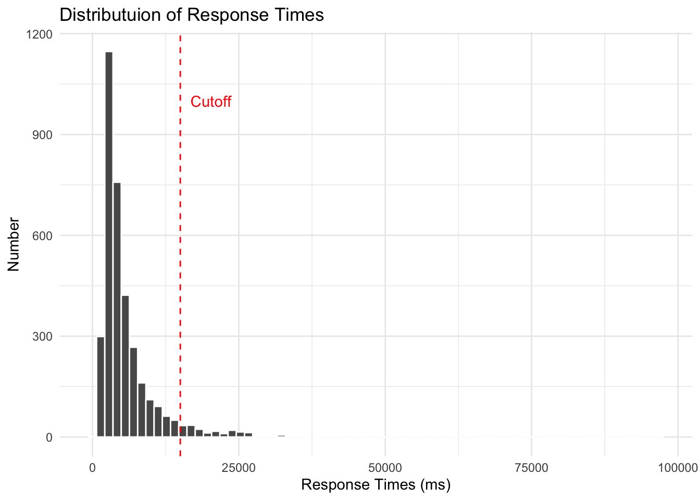
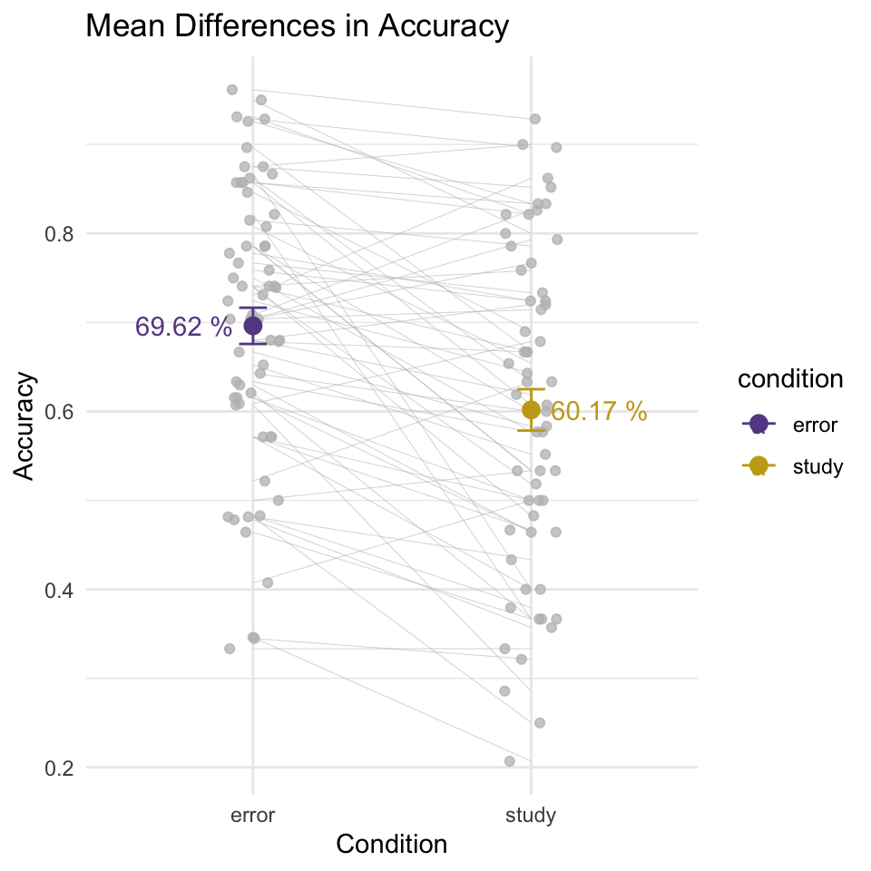
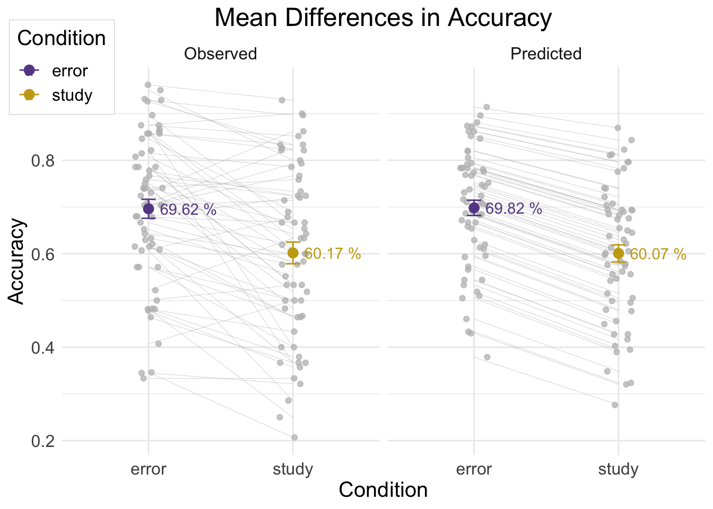
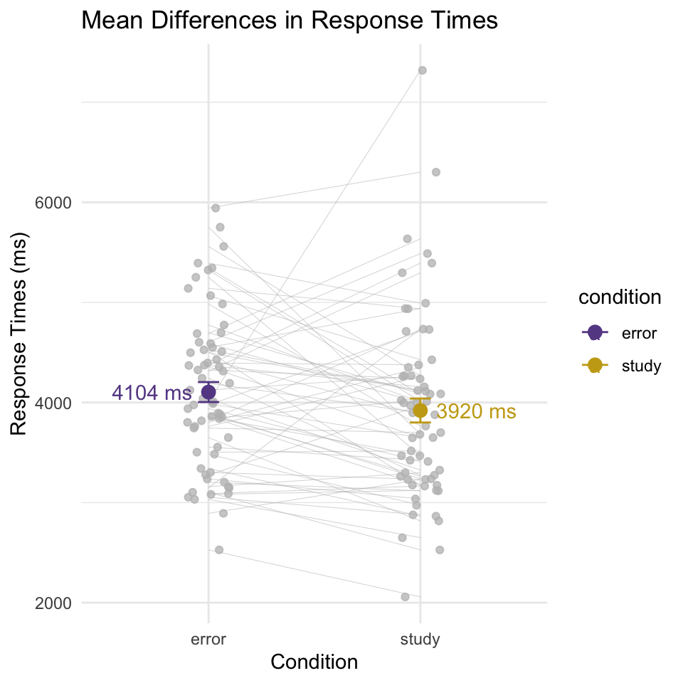
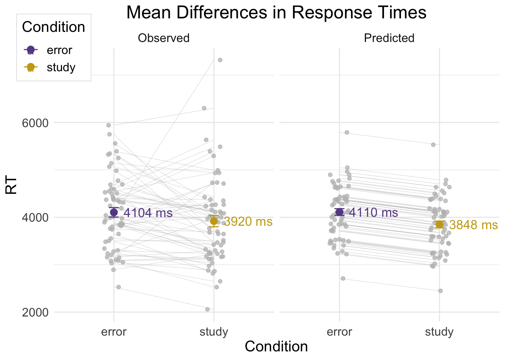
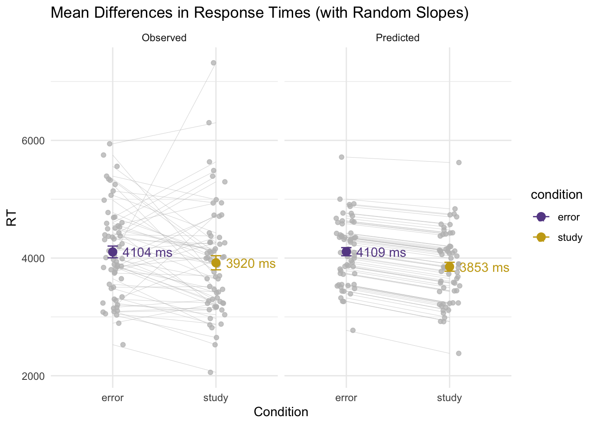
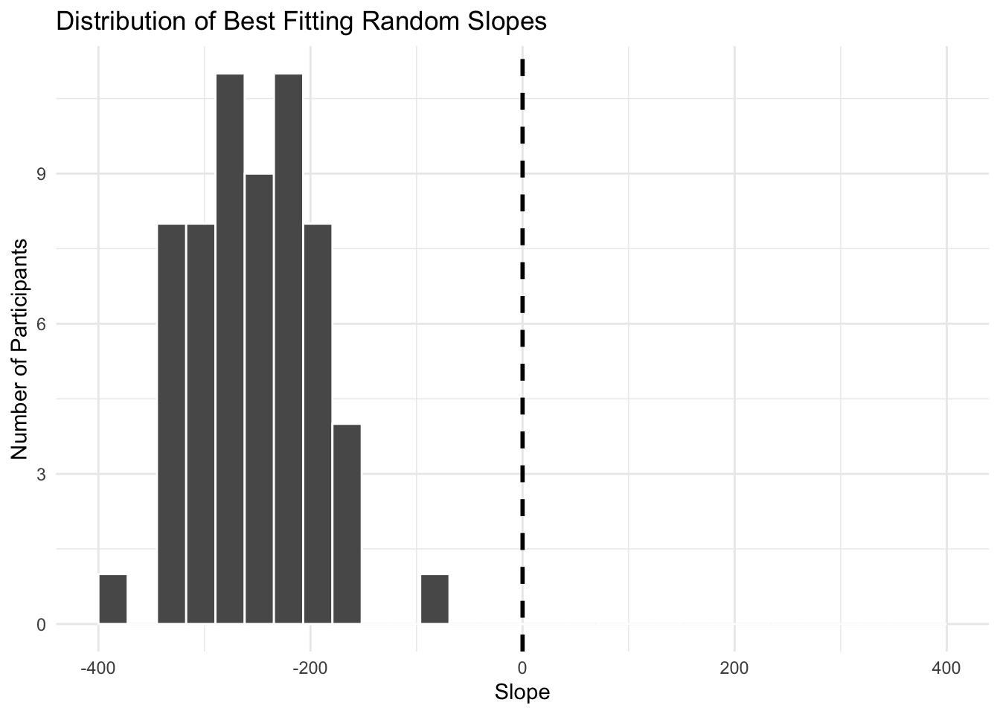
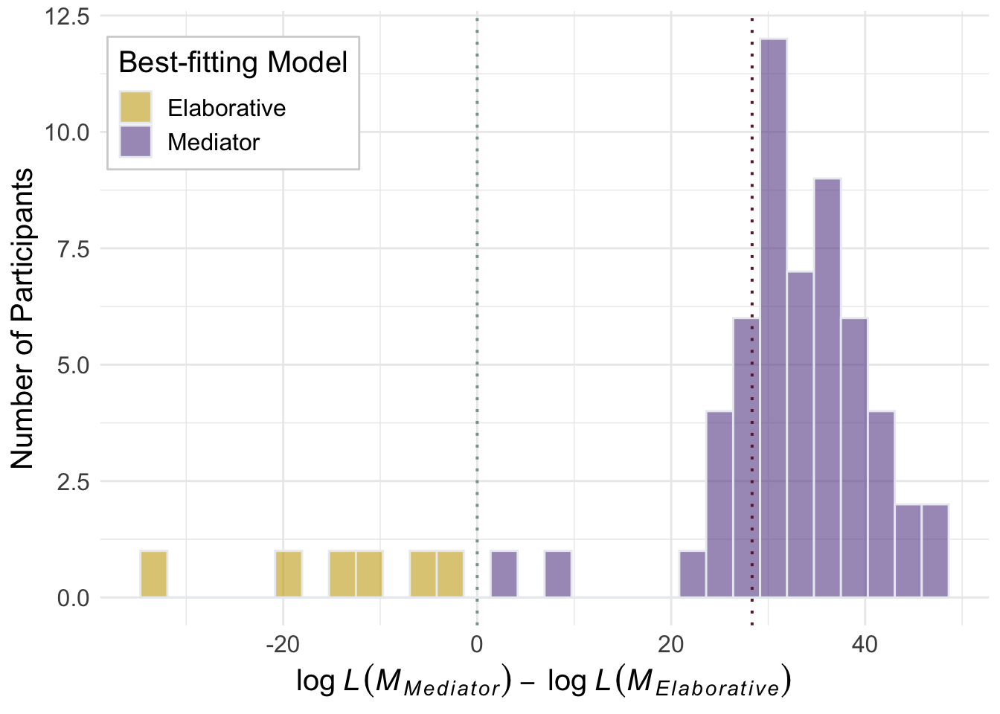

This study investigates how individuals learn from errors. Behavioral data collected in an error-generation memory task was compared to mathematical predictions from computational cognitive models reflecting alternative mechanisms of error learning. From this combined methods approach, we found that differences in reaction times support a mediator explanation of error learning in which individuals use a previous error as a secondary cue to retrieve an answer.
69 healthy students were recruited through the UW psychology subject pool. All participants were given course credit for their participation. After removing four participants for incomplete task completion and four for lack of English proficiency, a total of 61 participants were retained for analysis.
To determine error learning through accuracies and reaction times, participants completed a 30 minute memory task administered online using the PsyToolKit software. Participants memorized 60 different weakly-associated word pairs in either a study or error-generation condition. In the study condition, participants saw both the cue and target word simultaneously on the screen. In the error condition, participants saw only the cue word on the screen with a text box below where they were prompted to type in what they thought the target word was. After answering, participants were given corrective feedback by viewing both the cue and target word together. After learning all 60 word pairs, participants played a visuospatial game for 5 minutes to prevent rehearsal. After this distraction phase, participants took a self-paced final test consisting of all 60 word pairs.
# Load data:
errors <- read_excel("behavioral_data/error_data.xlsx")# Remove error items that were correctly guessed during the learning phase
study_items <- errors %>%
subset(condition == 2)
guess <- errors %>%
subset(phase == "learn" & condition == 1 & correct!=1) %>%
dplyr::select(participant, cue)
clean_errors <- left_join(guess, errors, by = c("participant", "cue")) %>%
filter(phase == "test") %>%
full_join(study_items, by = c("participant", "cue", "phase", "condition", "target", "response", "rt", "correct", "Column1", "Column2"))# Calculate individual accuracy and average reaction time
indiv_summary <- clean_errors %>%
filter(correct == 1) %>%
group_by(participant, condition) %>%
summarize(
performance = n()/30,
avgRT = mean(rt)
) %>%
mutate(condition = replace(condition, condition == 1, "error")) %>%
mutate(condition = replace(condition, condition == 2, "study"))
avg_perf = mean(indiv_summary$performance)
std_perf = sd(indiv_summary$performance)
avg_RT = mean(indiv_summary$avgRT)
std_RT = sd(indiv_summary$avgRT)
group_summary <- indiv_summary %>%
group_by(condition) %>%
summarize(
mean_performance = mean(performance),
stdev_performance = sd(performance),
mean_RT = mean(avgRT),
stdev_RT = sd(avgRT)
) %>%
mutate(condition = replace(condition, condition == 1, "error")) %>%
mutate(condition = replace(condition, condition == 2, "study"))
group_summary %>%
kable() %>%
kable_styling(bootstrap_options = c("hover", "striped"))| condition | mean_performance | stdev_performance | mean_RT | stdev_RT |
|---|---|---|---|---|
| error | 0.6311475 | 0.1491791 | 4395.333 | 1246.508 |
| study | 0.5765027 | 0.1685828 | 4251.825 | 1458.224 |
Let’s analyze the data using mixed linear models. First, let’s look at the distribution of response times to find if there are any obvious outliers:
ggplot(clean_errors, aes(x=rt)) +
geom_histogram(bins=70, color="white") +
xlab("Response Times (ms)") +
ggtitle("Distributuion of Response Times") +
ylab("Number") +
geom_vline(aes(xintercept=15000),
color="red", linetype="dashed") +
annotate("text", x = 15000, y = 1000, label = "Cutoff", hjust=-0.25, color="red") +
theme_minimal()
There are clearly some trials, from a few participants, that take a huge amount of time, up to 96 seconds. We do not want our data contaminated by trials in which participants looked at their phones, so we are going to use a cutoff of 15000 ms. We are also going to remove extremely fast trial, i.e. trials whose RT is greater than 200 ms.
cleandata <- clean_errors %>% filter(rt > 200, rt < 15000)Finally, we are going to rename the conditions to make sure we are using meaningful labels, and make sure that correct is between 0 and 1.
cleandata <- cleandata %>%
mutate(condition = replace(condition, condition == 1, "error")) %>%
mutate(condition = replace(condition, condition == 2, "study")) %>%
mutate(correct = replace(correct, correct == 2, 0))Mixed Linear Models are great because they naturally account for
variability and individual differences. We are going to first analyze
accuracies, which are encoded in the correct column of the
cleandata dataframe.
In our mixed linear models, we are going to model responses are arising from a combination of factors. First, we are going to model a fixed effect of condition, i.e., whether the particular response was given to an item in the Error or Study condition. Then, we are going to add a participant-level random intercept, which accounts for the fact that different participants have different baseline accuracies. And, finally, we are going to make sure that the model uses a binomial distribution, because accuracy data is binary (correct or not).
acc_model <- glmer(correct ~ condition # Fixed effect of condition
+ (1|participant), # Interface for participant
family=binomial,
cleandata)We can ask ourselves whether this model is a good model – for example, does it have the right amount of complexity? To answer this question, we can compare it to a simpler model, whichn does not have any random effects, and to a more complex model, which also includes a random slope per participant.
acc_model_simple <- glm(correct ~ condition, # Fixed effect of condition
family=binomial,
cleandata)
acc_model_complex <- glmer(correct ~ condition # Fixed effect of condition
+ (1|participant) # Interface for participant
+ (0 + condition|participant),
family=binomial,
cleandata)We can see that our model is better than the simpler model:
anova(acc_model, acc_model_simple) %>%
tidy() %>%
kable() %>%
kable_styling(bootstrap_options = c("hover", "striped"))| term | npar | AIC | BIC | logLik | deviance | statistic | df | p.value |
|---|---|---|---|---|---|---|---|---|
| acc_model_simple | 2 | 4354.237 | 4366.485 | -2175.119 | 4350.237 | NA | NA | NA |
| acc_model | 3 | 4144.539 | 4162.910 | -2069.269 | 4138.539 | 211.6988 | 1 | 0 |
while the complex model does not gain much in terms of fit.
anova(acc_model, acc_model_complex) %>%
tidy() %>%
kable() %>%
kable_styling(bootstrap_options = c("hover", "striped"))| term | npar | AIC | BIC | logLik | deviance | statistic | df | p.value |
|---|---|---|---|---|---|---|---|---|
| acc_model | 3 | 4144.539 | 4162.910 | -2069.269 | 4138.539 | NA | NA | NA |
| acc_model_complex | 6 | 4150.261 | 4187.004 | -2069.131 | 4138.261 | 0.277244 | 3 | 0.9642499 |
Having picked the model, we can visualize the results here:
acc_model %>%
tidy() %>%
kable() %>%
kable_styling(bootstrap_options = c("hover", "striped"))| effect | group | term | estimate | std.error | statistic | p.value |
|---|---|---|---|---|---|---|
| fixed | NA | (Intercept) | 0.9254675 | 0.1069792 | 8.650907 | 0 |
| fixed | NA | conditionstudy | -0.4681301 | 0.0763660 | -6.130088 | 0 |
| ran_pars | participant | sd__(Intercept) | 0.7047752 | NA | NA | NA |
And in APA style
tab_model(acc_model)| correct | |||
|---|---|---|---|
| Predictors | Odds Ratios | CI | p |
| (Intercept) | 2.52 | 2.05 – 3.11 | <0.001 |
| condition [study] | 0.63 | 0.54 – 0.73 | <0.001 |
| Random Effects | |||
| σ2 | 3.29 | ||
| τ00 participant | 0.50 | ||
| ICC | 0.13 | ||
| N participant | 61 | ||
| Observations | 3374 | ||
| Marginal R2 / Conditional R2 | 0.014 / 0.144 | ||
And here is a quick visualization:
cleandata_agg <- cleandata %>% group_by(participant, condition) %>%
summarise(Accuracy = mean(correct))
cleandata_summary <- cleandata_agg %>% group_by(condition) %>%
summarise(Accuracy = mean(Accuracy))
ggplot(cleandata_agg, aes(x=condition, y=Accuracy, color=condition)) +
geom_line(color="grey", aes(group=participant), size=0.1) +
geom_point(position = position_jitter(width=0.1), alpha=0.75, color="grey") +
# scale_color_aaas() +
scale_color_manual(values=c("#674b94", "#c9a818")) +
ggtitle("Mean Differences in Accuracy") +
xlab("Condition") +
stat_summary(geom="point", fun.data = "mean_se", size=3) +
stat_summary(geom="errorbar", fun.data = "mean_se", width=0.1) +
geom_text(data=cleandata_summary,
aes(x=condition,
y=Accuracy,
label=paste(round(Accuracy*100, 2), "%")),
hjust= c(1.2, -0.2)) +
theme_minimal()
How is the data compared to the linear model predictions? To do so, we can generate the model predictions and visualize them side by side to the data:
cleandata <- cleandata %>% mutate(pred_correct = fitted(acc_model))
cleandata %>% pivot_longer(cols=c("correct", "pred_correct"),
values_to = "accuracy",
names_to = "type") -> cleandata_long
cleandata_agg_pred <- cleandata_long %>%
mutate(type = replace(type, type == "correct", "Observed")) %>%
mutate(type = replace(type, type == "pred_correct", "Predicted")) %>%
group_by(participant, condition, type) %>%
summarise(Accuracy = mean(accuracy))
cleandata_summary_pred <- cleandata_agg_pred %>%
group_by(condition, type) %>%
summarise(Accuracy = mean(Accuracy))
ggplot(cleandata_agg_pred, aes(x=condition, y=Accuracy, color=condition)) +
facet_wrap(~ type) +
geom_line(color="grey", aes(group=participant), size=0.1) +
geom_point(position = position_jitter(width=0.1), alpha=0.75, color="grey") +
# scale_color_aaas() +
scale_color_manual(values=c("#674b94", "#c9a818")) +
geom_text(data=cleandata_summary_pred,
aes(x=condition,
y=Accuracy,
label=paste(round(Accuracy*100, 2), "%")),
hjust= c(-0.2)) +
ggtitle("Mean Differences in Accuracy") +
xlab("Condition") +
stat_summary(geom="point", fun.data = "mean_se", size=3) +
stat_summary(geom="errorbar", fun.data = "mean_se", width=0.1) +
labs(color = "Condition") +
theme_minimal() +
theme(legend.position = c(0, 1),
legend.background = element_rect(fill="white",size=0.2,
linetype="solid", colour ="lightgrey"),
text = element_text(size=15),
plot.title = element_text(hjust = 0.5))## Warning: The `size` argument of `element_rect()` is deprecated as of ggplot2 3.4.0.
## ℹ Please use the `linewidth` argument instead.
## This warning is displayed once every 8 hours.
## Call `lifecycle::last_lifecycle_warnings()` to see where this warning was generated.
To analyze response times, we are going to first include only correct trials
cleandata_rt <- cleandata %>% filter(correct == 1)Then, we are going to run another mixed level model using the same structure as the Accuracy model. Response times have a complicated relationship to accuracy, since they are the sum of retrieval times and perceptual-motor non-retrieval times.
rt_model <- lmer(rt ~ condition # Fixed effect of condition
+ (1|participant), # Random intercept of participant
#+ (0 + condition|participant), # Random slope for participant
cleandata_rt)We can ask ourselves whether this model is a good model – for example, does it have the right amount of complexity? To answer this question, we can compare it to a simpler model, whichn does not have any random effects, and to a more complex model, which also includes a random slope per participant.
rt_model_simple <- lm(rt ~ condition, cleandata_rt)
rt_model_complex <- lmer(rt ~ condition # Fixed effect of condition
+ (1|participant) # Random intercept of participant
+ (0 + condition|participant), # Random slope for participant
cleandata_rt)We can see that our model is better than the simpler model:
anova(rt_model, rt_model_simple) %>%
tidy() %>%
kable() %>%
kable_styling(bootstrap_options = c("hover", "striped"))| term | npar | AIC | BIC | logLik | deviance | statistic | df | p.value |
|---|---|---|---|---|---|---|---|---|
| rt_model_simple | 3 | 39661.72 | 39678.78 | -19827.86 | 39655.72 | NA | NA | NA |
| rt_model | 4 | 39551.22 | 39573.97 | -19771.61 | 39543.22 | 112.5025 | 1 | 0 |
while the complex model does not gain much in terms of fit.
anova(rt_model, rt_model_complex) %>%
tidy() %>%
kable() %>%
kable_styling(bootstrap_options = c("hover", "striped"))| term | npar | AIC | BIC | logLik | deviance | statistic | df | p.value |
|---|---|---|---|---|---|---|---|---|
| rt_model | 4 | 39551.22 | 39573.97 | -19771.61 | 39543.22 | NA | NA | NA |
| rt_model_complex | 7 | 39556.84 | 39596.65 | -19771.42 | 39542.84 | 0.3782384 | 3 | 0.9447003 |
The results are here:
summary(rt_model)## Linear mixed model fit by REML. t-tests use Satterthwaite's method ['lmerModLmerTest']
## Formula: rt ~ condition + (1 | participant)
## Data: cleandata_rt
##
## REML criterion at convergence: 39521.5
##
## Scaled residuals:
## Min 1Q Median 3Q Max
## -1.7092 -0.6393 -0.2822 0.3154 5.3810
##
## Random effects:
## Groups Name Variance Std.Dev.
## participant (Intercept) 414611 643.9
## Residual 4242404 2059.7
## Number of obs: 2180, groups: participant, 61
##
## Fixed effects:
## Estimate Std. Error df t value Pr(>|t|)
## (Intercept) 4109.70 103.06 86.78 39.877 < 2e-16 ***
## conditionstudy -261.40 88.79 2131.56 -2.944 0.00328 **
## ---
## Signif. codes: 0 '***' 0.001 '**' 0.01 '*' 0.05 '.' 0.1 ' ' 1
##
## Correlation of Fixed Effects:
## (Intr)
## conditnstdy -0.409And here is a nicer table formatting.
rt_model %>%
tidy() %>%
kable() %>%
kable_styling(bootstrap_options = c("hover", "striped"))| effect | group | term | estimate | std.error | statistic | df | p.value |
|---|---|---|---|---|---|---|---|
| fixed | NA | (Intercept) | 4109.6981 | 103.05873 | 39.877246 | 86.78213 | 0.0000000 |
| fixed | NA | conditionstudy | -261.3976 | 88.79208 | -2.943929 | 2131.55969 | 0.0032758 |
| ran_pars | participant | sd__(Intercept) | 643.9028 | NA | NA | NA | NA |
| ran_pars | Residual | sd__Observation | 2059.7096 | NA | NA | NA | NA |
And here it is in APA style:
tab_model(rt_model)| rt | |||
|---|---|---|---|
| Predictors | Estimates | CI | p |
| (Intercept) | 4109.70 | 3907.59 – 4311.80 | <0.001 |
| condition [study] | -261.40 | -435.52 – -87.27 | 0.003 |
| Random Effects | |||
| σ2 | 4242403.70 | ||
| τ00 participant | 414610.83 | ||
| ICC | 0.09 | ||
| N participant | 61 | ||
| Observations | 2180 | ||
| Marginal R2 / Conditional R2 | 0.004 / 0.092 | ||
And here is a visualization:
cleandata_rt_agg <- cleandata_rt %>% group_by(participant, condition) %>%
summarise(RT = mean(rt))
cleandata_rt_summary <- cleandata_rt_agg %>% group_by(condition) %>%
summarise(RT = mean(RT))
ggplot(cleandata_rt_agg, aes(x=condition, y=RT, color=condition)) +
geom_line(color="grey", aes(group=participant), size=0.1) +
geom_point(position = position_jitter(width=0.1), alpha=0.75, color="grey") +
scale_color_manual(values=c("#674b94", "#c9a818")) +
ggtitle("Mean Differences in Response Times") +
xlab("Condition") +
ylab("Response Times (ms)") +
stat_summary(geom="point", fun.data = "mean_se", size=3) +
stat_summary(geom="errorbar", fun.data = "mean_se", width=0.1) +
geom_text(data=cleandata_rt_summary,
aes(x=condition, y=RT, label=paste(round(RT), "ms")), hjust= c(1.2, -0.2)) +
theme_minimal()
How is the data compared to the linear model predictions? To do so, we can generate the model predictions and visualize them side by side to the data:
cleandata_rt <- cleandata_rt %>% mutate(pred_rt = fitted(rt_model))
cleandata_rt %>% pivot_longer(cols=c("rt", "pred_rt"),
values_to = "RT",
names_to = "type") -> cleandata_rt_long
cleandata_rt_agg_pred <- cleandata_rt_long %>%
mutate(type = replace(type, type == "rt", "Observed")) %>%
mutate(type = replace(type, type == "pred_rt", "Predicted")) %>%
group_by(participant, condition, type) %>%
summarise(RT = mean(RT))
cleandata_rt_summary_pred <- cleandata_rt_agg_pred %>%
group_by(condition, type) %>%
summarise(RT = mean(RT))
ggplot(cleandata_rt_agg_pred, aes(x=condition, y=RT, color=condition)) +
facet_wrap(~ type) +
geom_line(color="grey", aes(group=participant), size=0.1) +
geom_point(position = position_jitter(width=0.1), alpha=0.75, color="grey") +
# scale_color_aaas() +
scale_color_manual(values=c("#674b94", "#c9a818")) +
geom_text(data=cleandata_rt_summary_pred,
aes(x=condition,
y=RT,
label=paste(round(RT), "ms")), size=4.5,
hjust= c(-0.2)) +
ggtitle("Mean Differences in Response Times") +
xlab("Condition") +
stat_summary(geom="point", fun.data = "mean_se", size=3) +
stat_summary(geom="errorbar", fun.data = "mean_se", width=0.1) +
labs(color = "Condition") +
theme_minimal() +
theme(legend.position = c(0, 1),
legend.background = element_rect(fill="white",size=0.2,
linetype="solid", colour ="lightgrey"),
text = element_text(size=15),
plot.title = element_text(hjust = 0.5))
Some participants seem to have slopes in the opposite direction, suggesting the use of the elaborative strategy. Is that the case? To examine this, we can go back to the complex RT model, which include random slopes as well as random intercepts.
cleandata_rt <- cleandata_rt %>% mutate(pred_rt = fitted(rt_model_complex))
cleandata_rt %>% pivot_longer(cols=c("rt", "pred_rt"),
values_to = "RT",
names_to = "type") -> cleandata_rt_long
cleandata_rt_agg_pred <- cleandata_rt_long %>%
mutate(type = replace(type, type == "rt", "Observed")) %>%
mutate(type = replace(type, type == "pred_rt", "Predicted")) %>%
group_by(participant, condition, type) %>%
summarise(RT = mean(RT))
cleandata_rt_summary_pred <- cleandata_rt_agg_pred %>%
group_by(condition, type) %>%
summarise(RT = mean(RT))
ggplot(cleandata_rt_agg_pred, aes(x=condition, y=RT, color=condition)) +
facet_wrap(~ type) +
geom_line(color="grey", aes(group=participant), size=0.1) +
geom_point(position = position_jitter(width=0.1), alpha=0.75, color="grey") +
scale_color_manual(values=c("#674b94", "#c9a818")) +
geom_text(data=cleandata_rt_summary_pred,
aes(x=condition,
y=RT,
label=paste(round(RT), "ms")),
hjust= c(-0.2)) +
ggtitle("Mean Differences in Response Times (with Random Slopes)") +
xlab("Condition") +
stat_summary(geom="point", fun.data = "mean_se", size=3) +
stat_summary(geom="errorbar", fun.data = "mean_se", width=0.1) +
theme_minimal()
Note that all the slopes are negative: this means that the apparent upward slopes are the effects of outlier data.
To check, let’s examine the distribution of the slopes of each participant:
coeffs <- coef(rt_model_complex)
slopes <- coeffs$participant[,3] - coeffs$participant[,1]
slopedata <- tibble(Slope=slopes)
ggplot(slopedata, aes(x=Slope)) +
geom_histogram(bin=10, col="white") +
xlim(-400, 400) +
ylab("Number of Participants") +
ggtitle("Distribution of Best Fitting Random Slopes") +
theme_minimal() +
geom_vline(xintercept = 0, linetype="dashed",
color = "black", size=1)
Make a visual for LL:
lldata <- read.csv("LL_model1.csv")
lldata <- lldata %>%
filter(X != 61)mean <- mean(lldata$diff.LL)
elabMean <- lldata %>%
filter(best.model == "Elaborative") %>%
pull(diff.LL) %>%
mean()
ggplot(lldata, aes(x=diff.LL, fill=best.model)) +
geom_histogram(color="#e9ecef", alpha=0.6, position = 'identity') +
scale_fill_manual(values=c("#c9a818", "#674b94")) +
geom_vline(xintercept=mean, col="#6b2537", linetype="dotted", size=0.7) +
geom_vline(xintercept=0, col="#86A397", linetype="dotted", size=0.7) +
xlab(expression(log~italic(L(M[Mediator]))~-~log~italic(L(M[Elaborative])))) +
ylab("Number of Participants") +
labs(fill = "Best-fitting Model") +
theme_minimal() +
theme(legend.position = c(0.15, 0.85),
legend.background = element_rect(fill="white",size=0.5,
linetype="solid", colour ="lightgrey"),
text = element_text(size=15))## `stat_bin()` using `bins = 30`. Pick better value with `binwidth`.